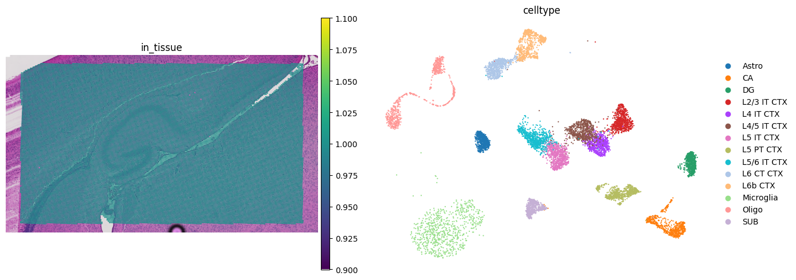
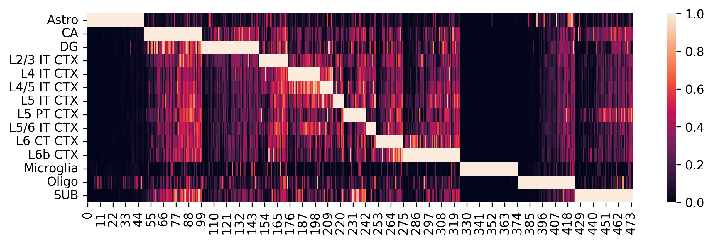
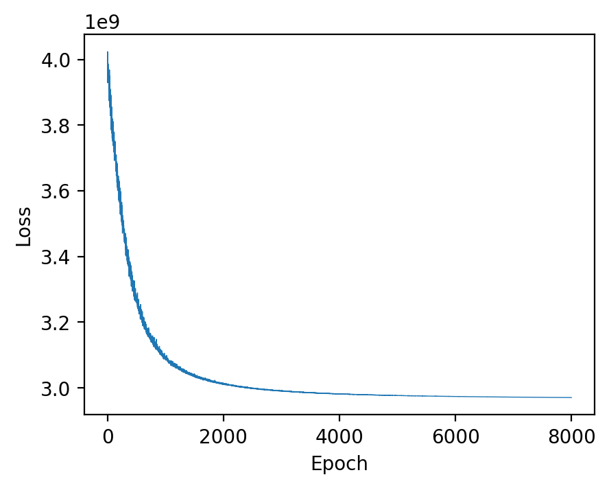

[Work In Progres] Deconvolution Mouse Brain VisiumHD Data using Spotiphy
by Ziqian Zheng zzheng92@wisc.edu and Jiyuan Yang jiyuan.yang@stjude.org.
Last update: Oct 1st 2025
Contents
Data Preparation: Loading and Processing
Deconvolution: Marker Gene Selection and scRNA Reference Construction
Deconvolution: Cellular Proportion Estimation
[1]:
import sys
sys.path.append("..")
import os
import spotiphy
import numpy as np
import pandas as pd
import matplotlib as mpl
import scanpy as sc
import torch
results_folder = "Spotiphy_result_hd/"
if not os.path.exists(results_folder):
# Create result folder if it does not exist
os.makedirs(results_folder)
Data Preparation: Loading and Processing
Check if the example datasets exist. If not, download them from GitHub.
[2]:
import requests
import zipfile
if not os.path.exists("data/"):
os.makedirs("data/")
data_path = ["data/scRNA_mouse_brain.h5ad", "data/VisiumHD_mouse_brain.zip"]
urls = [
"https://raw.githubusercontent.com/jyyulab/Spotiphy/main/tutorials/data/scRNA_mouse_brain.h5ad",
"https://raw.githubusercontent.com/jyyulab/Spotiphy/refs/heads/main/tutorials/data/VisiumHD_mouse_brain.zip",
]
for i, path in enumerate(data_path):
if not os.path.exists(path):
response = requests.get(urls[i], allow_redirects=True)
with open(path, "wb") as file:
file.write(response.content)
del response
# Extract the zip file if not already extracted
zip_path = data_path[1]
extract_folder = "data/"
if os.path.exists(zip_path):
with zipfile.ZipFile(zip_path, "r") as zip_ref:
zip_ref.extractall(extract_folder)
Load the scRNA and VisiumHD data. The VisiumHD dataset is saved as an h5ad file, but users may also load it directly from the ‘outs’ folder using the function spotiphy.load_visium_hd_to_anndata.
[3]:
adata_sc = adata_sc = sc.read_h5ad("data/scRNA_mouse_brain.h5ad")
adata_st = sc.read_h5ad("data/VisiumHD_mouse_brain.h5ad")
# Load from the 'outs' folder directly
# adata_st = spotiphy.load_visium_hd_to_anndata(
# "VisiumHD_outs_folder", bin_size_um=16
# )
adata_st.var_names_make_unique()
adata_st.obsm["spatial"] = adata_st.obsm["spatial"].astype(np.int32)
X = adata_st.X.toarray() if not isinstance(adata_st.X, np.ndarray) else adata_st.X
adata_st = adata_st[X.sum(axis=1) > 100, :].copy()
print(f"There are {adata_st.n_obs} spots and {adata_st.n_vars} genes in the ST data.")
key_type = "celltype"
type_list = sorted(list(adata_sc.obs[key_type].unique().astype(str)))
print(f"There are {len(type_list)} cell types: {type_list}")
anndata.py (1908): Variable names are not unique. To make them unique, call `.var_names_make_unique`.
There are 27881 spots and 19465 genes in the ST data.
There are 14 cell types: ['Astro', 'CA', 'DG', 'L2/3 IT CTX', 'L4 IT CTX', 'L4/5 IT CTX', 'L5 IT CTX', 'L5 PT CTX', 'L5/6 IT CTX', 'L6 CT CTX', 'L6b CTX', 'Microglia', 'Oligo', 'SUB']
Verify all inputs carefully before proceeding.
[4]:
fig, axs = mpl.pyplot.subplots(1, 2, figsize=(14, 5))
sc.pl.spatial(
adata_st,
color="in_tissue",
frameon=False,
show=False,
ax=axs[0],
img_key="hires",
)
sc.pl.umap(adata_sc, color=key_type, size=10, frameon=False, show=False, ax=axs[1])
mpl.pyplot.tight_layout()
mpl.pyplot.savefig(f"{results_folder}qc.jpg", bbox_inches="tight", dpi=400)
scatterplots.py (392): No data for colormapping provided via 'c'. Parameters 'cmap' will be ignored

Deconvolution: Marker Gene Selection and scRNA Reference Construction
Initialize the spatial transcriptomics and scRNA data. Specifically,
adata_scandadata_stare normalizedcells and genes in
adata_scare filteredonly the common genes shared by
adata_scandadata_stare kept
[5]:
adata_sc, adata_st = spotiphy.initialization(adata_sc, adata_st, verbose=1)
Convert expression matrix to array: 0.8s
Normalization: 2.45s
Filtering: 1.68s
Find common genes: 0.01s
Select marker genes based on pairwise statistical tests. The selected marker genes are saved as a CSV file.
Users can adjust the following arguments:
n_select: the maximum number of marker genes select for each cell typethreshold_p: threshold of the \(p\)-value to be considered significantthreshold_fold: threshold of the fold-change to be considered significantq: Since more than one \(p\)-values are obtained in using the pairwise tests, we only consider the \(p\)-value at quantileq. For additional details, please refer to the supplementary material of the paper.return_dict: Whether return a dictionary representing the marker genes selected for each cell type, or just return the list of all selected marker genes.
The parameters specified in the following code block provide a good starting point.
[6]:
marker_gene_dict = spotiphy.sc_reference.marker_selection(
adata_sc,
key_type=key_type,
return_dict=True,
n_select=50,
threshold_p=0.1,
threshold_fold=1.5,
q=0.15,
)
marker_gene = []
marker_gene_label = []
for type_ in type_list:
marker_gene.extend(marker_gene_dict[type_])
marker_gene_label.extend([type_] * len(marker_gene_dict[type_]))
marker_gene_df = pd.DataFrame({"gene": marker_gene, "label": marker_gene_label})
marker_gene_df.to_csv(f"{results_folder}marker_gene.csv")
# Filter scRNA and spatial matrices with marker genes
adata_sc_marker = adata_sc[:, marker_gene]
adata_st_marker = adata_st[:, marker_gene]
Construct the single-cell reference and visualize selected marker genes with heatmaps.
Adjust parameters in the previous step as needed to optimize marker gene selection:
If several cell types are very similar (e.g., T cell subtypes), try setting
q=0.3or adjust accordingly.If there are limited marker genes for each cell type, try setting
threshold_fold=1.2or adjust as needed.
[7]:
sc_ref = spotiphy.construct_sc_ref(adata_sc_marker, key_type=key_type)
spotiphy.sc_reference.plot_heatmap(
adata_sc_marker, key_type, save=True, out_dir=results_folder
)
14it [00:00, 1216.12it/s]

Another opinion will be input your customized marker gene list. Use the following code:
#marker_gene = pd.read_csv(results_folder+'customized_marker_genes.csv', header=0)
Deconvolution: Cellular Proportion Estimation
For performing the deconvolution, we calculate the posterior distribution of certain parameters within a probabilistic generative model using `Pyro <https://pyro.ai/>`__.
Parameters of the function estimation_proportion:
X: Spatial transcriptomics data. n_spot*n_gene.adata_sc: scRNA data (Anndata).sc_ref: Single cell reference. n_type*n_gene.type_list: List of the cell types.key_type: Column name of the cell types in adata_sc.batch_prior: Parameter involved in the prior distribution of the batch effect factors. It is recommended to select from \([1, 2]\).n_epoch: Number of training epoch.
[8]:
device = "cuda" if torch.cuda.is_available() else "cpu"
X = np.array(adata_st_marker.X)
cell_proportion = spotiphy.deconvolution.estimation_proportion(
X,
adata_sc_marker,
sc_ref,
type_list,
key_type,
n_epoch=8000,
plot=True,
batch_prior=1,
device=device,
)
adata_st.obs[type_list] = cell_proportion
# Save the cellular proportions for future usage
np.save(f"{results_folder}proportion.npy", cell_proportion)
np.savetxt(f"{results_folder}proportion.csv", adata_st.obs[type_list], delimiter=",")
100%|██████████| 8000/8000 [04:05<00:00, 32.62it/s]

875694838.py (14): Trying to modify attribute `.obs` of view, initializing view as actual.
Generate heatmaps of cellular proportions.
[9]:
vmax = np.quantile(adata_st.obs[type_list].values, 0.98, axis=0)
vmax[vmax < 0.05] = 0.05
with mpl.rc_context(
{"figure.figsize": [5, 3], "figure.dpi": 300, "xtick.labelsize": 0}
):
ax = sc.pl.spatial(
adata_st,
cmap="viridis",
color=type_list,
img_key="hires",
vmin=0,
vmax=list(vmax),
show=False,
ncols=5,
alpha_img=0.4,
)
ax[0].get_figure().savefig(f"{results_folder}Spotiphy_deconvolution.jpg")